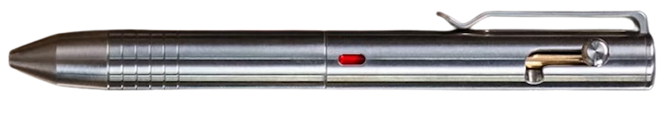

Bolt Action Multi Pen
Bajonettmechanismus mit Drehauswahl
Stand: 02.10.2026
Am 29.09.2026 stellte die Firma BigIdeaDesign (USA) einen 4-Farben-Kugelschreiber mit Bajonett-Arretierung und Dreh-Farbauswahl vor.
Es ist die erste Kombination der beiden Mechanismen jemals.

Beschreibung
Der Stift ist ein Machined Pen.Die obere Stifthälfte hält den Auswahlstab, der als Teil des Bedienelements (Bolt) ausgebildet ist, die untere Stifthälfte hält die Kugelschreiberminen.
Wird der Bolt in seiner Kurve verschoben und eingehakt, drückt der Auswahlstab die mit ihm fluchtende ('ausgewählte') Kugelschreibermine gegen Druckfederdruck nach unten.
Das Wechseln der Farbe geschieht durch Verdrehen der Stifthälften zueinander bei zurückgestellter Schreibmine.
Das Rückstellen erfolgt manuell durch das Zurückschieben des 'Bolts', woraufhin der Farbwechsel erneut vorgenommen werden kann.
Anders als der Tribolt wird also nur ein einziger Bolt genutzt, statt einem Bolt pro Mine. Das macht den Stift dünner und praktischer.
Ein Indikatorfenster unterstützt die Farbauswahl.
Damit keine Farbauswahl- und Reihenfolge vorgegeben ist, ist das Fenster als Durchgangsloch ausgelegt, durch welche die Mine sichtbar ist.
Nachteil ist allerdings, dass eine Mine mit gefärbter Hülse gewählt werden muss, was einzig auf die Mine "Schneider Take4" zutrifft.
Variationen
- Kupfer (65,2 gramm / 2.3 oz)- Messing (61,52 gramm / 2.17 oz)
- Titan (41,11 gramm / 1.45 oz)
Länge: 130mm. Durchmesser: 11.8mm.
Den Clip und 'Bolt' gibt es auch in Timascus, also Titan mit schönen Mustern, das durch Diffusionsverschweißen verschiedener Titanlegierungen erzeugt wird. Materialien wie diese sind in dieser Szene sehr beliebt.
Minen-Details
Ideal:- Schneider-Take4-Minen
Kompatibel:
- Uni SXR-80-38 / SXR-80-05 / SXR-80-07 / SXR-80-10
Nicht kompatibel:
- Metallminen (D1-Minen / Fisher-Space-Pen-Minen)
- Hybrid-Minen (URR-103-05)
- Kunststoffminen mit anderen Maßen (BiC-4-color-Minen)
Anforderungen:
- Material: Kunststoff
- Länge: 90mm
- Durchmesser: 3mm
- Loch hinten: 2mm-2.1mm
Als Minen wurden Plastikminen gewählt - diese haben immer ein Loch hinten, mit dem sie auf Stecksitzen im Stiftkörper befestigt werden.
Sie haben die praktische Eigenschaft, sich zur Schreiböffnung biegen zu können, wodurch die Stecksitze vereinfacht werden (kein Schwenken ist nötig).
Die meisten anderen hochwertigen Mehrfarbstifte nutzen metallene D1-Minen, welche einen kleineren Durchmesser haben, doch aufwändigere Aufhängung erfordern und teurer sind.
Bemerkenswertes
Während es verschiedene durch Zerspanung hergestellte Mehrfarbstifte gibt, ist der Boltaction Multipen von BigIdeaDesign der erste, der die typischen 'Machined Pen'-Charakteristiken besitzt und gleichzeitig in großer Zahl hergestellt wird.Für Mehrfarbstift-Begeisterte bedeutet es neue Materialien (wie Titan oder Timascus), die sie zuvor bei noch keinem Mehrfarbstift gesehen haben, als auch einen neuen Schwerpunkt in der Designphilosophie.
Der geringe Preis ($139) durch Auslagerung der Produktion ermöglicht eine weite Verbreitung des Stifts.
Möglicherweise finden von nun an weitere Hersteller von Machined Pens Interesse!